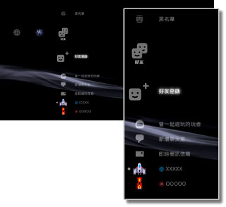

好友 > 好友簡介
好友簡介
若要使用此機能，可能需先更新系統軟件。
能透過網路，與其他的PS3™使用者，快樂展開聊天或傳收訊息。若要使用此機能，需先新建一個PlayStation®Network的帳戶。選擇 （好友）後，會顯示以下圖示。但顯示的圖示可能因操作狀況而異。
（好友）後，會顯示以下圖示。但顯示的圖示可能因操作狀況而異。

 |
黑名單 | 會顯示登錄至黑名單的使用者名單。 |
|---|---|---|
 |
好友登錄 | 可傳送希望登錄至好友名單的確認訊息。 |
 |
曾一起遊玩的玩者 | 會顯示曾一起遊玩PlayStation®3規格軟件之線上遊戲* 的玩者名單。選擇此項目，可向對方傳送訊息或希望成為好友的登錄請求。 |
 |
新增聊天室 | 可開始聊天。 |
 |
文字聊天室 | 會於存在文字聊天室時顯示。若有新的文字聊天室，則會顯示 。 。 |
 |
AV聊天室 | 僅於展開AV聊天時顯示。 |
 |
即時簡訊信箱 | 可新增訊息，或閱覽已接收／傳送的簡訊。 |
 |
（自己的線上ID） | 顯示PlayStation®Network帳戶設定的個人造型（虛擬分身）。 |
|
（好友名稱） | 已有好友登錄至好友名單時顯示。可與已登錄之好友開始聊天或傳收訊息。 |
| * |
部份遊戲可能不支援。 |
|---|
提示
- PS3™會將已登錄至好友名單的人暱稱為［好友］。且會將選擇（好友）時交流傳遞的郵件暱稱為［訊息］。
 （曾一起遊玩的玩者）最多可顯示50人。若超過50人，即會從最舊的玩者開始自動刪除。
（曾一起遊玩的玩者）最多可顯示50人。若超過50人，即會從最舊的玩者開始自動刪除。- 若要進行AV聊天，需先準備非隨附的聲音輸出入裝置（耳機組等）。若要進行影音聊天，則需先準備聲音輸出入裝置與非隨附的USB攝影機。
- 您可在PS3™主機上使用USB耳機組／Bluetooth®（藍芽）耳機組／EyeToy™ USB攝影機／PlayStation®Eye攝影機／兼容USB video class（UVC）的USB攝影機。
- 使用USB HUB（集線器）連接USB攝影機時，請使用支援USB2.0的HUB（集線器）。若使用不支援USB2.0的HUB（集線器），可能會出現畫像紛亂或無法顯示的情形。
- 周邊機器的支援與否和使用方法，請詢問各機器的銷售廠商。